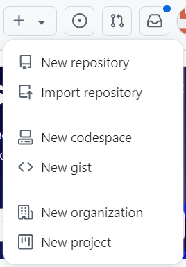
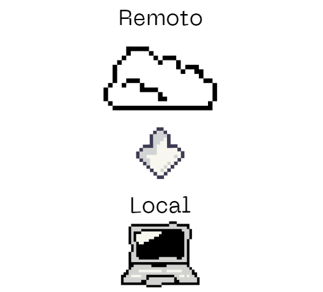
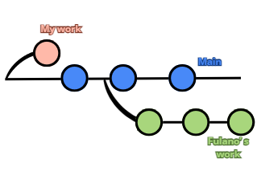
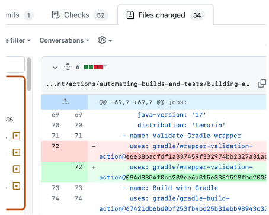
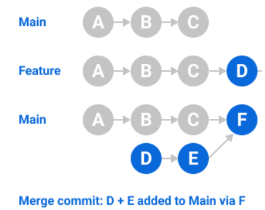
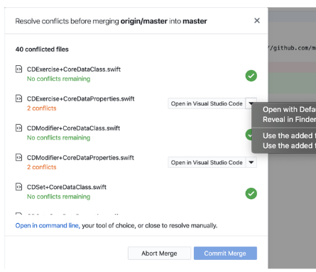
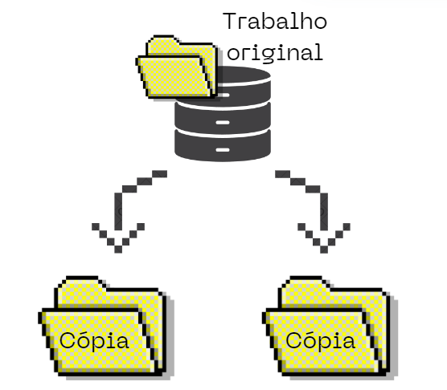
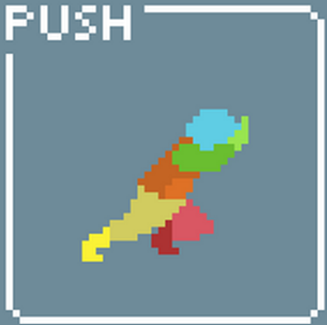
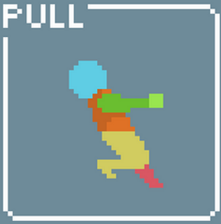

Conteúdo
Clique aqui para acessar a gravação da aula Introdução ao Git e GitHub
O que é controle de versão?#
Controle de versão é um sistema que registra alterações no desenvolvimento de software, permitindo que a equipe acesse o histórico de versões anteriores, recupere versões específicas e entenda mudanças feitas por outros.
Ele facilita o trabalho em equipe e individual, possibilitando o registro de versões, codificação simultânea e integração segura e documentada de trabalhos.
Um dos sistemas mais conhecidos e utilizados para controle de versão é o Git que, em conjunto com o GitHub se tornam ferramentas poderosas e práticas para colaboração e armazenamento de projetos de software.

Diferença entre Git e GitHub#
Enquanto o Git é uma ferramenta de controle de versão local, o GitHub é uma plataforma online que permite hospedar projetos Git e colaborar com outras pessoas.
Principais Conceitos#
Repositório
- Um repositório é o elemento mais básico do GitHub. É um lugar onde você pode armazenar seu código, seus arquivos e o histórico de revisão de cada arquivo. Os repositórios podem ter vários colaboradores e podem ser públicos ou particulares.

Remoto e Local
- Remoto é o que está online (nuvem). Local é o que está na sua máquina

Branch
Permite que você isole o trabalho em diferentes linhas de desenvolvimento. Podemos usar uma branch para isolar o trabalho de desenvolvimento sem afetar outros branches no repositório. Cada repositório tem um branch padrão e pode ter vários outros branches. Você pode fazer merge de um branch em outro branch usando uma pull request
Branch Padrão
Quando você cria um repositório com um conteúdo no GitHub, o GitHub cria o repositório com uma única ramificação. Este primeiro branch no repositório é o branch-padrão. O branch-padrão é o branch que GitHub exibe quando alguém visita o seu repositório. O branch padrão é também o branch inicial que o Git verifica localmente quando alguém clona o repositório. A menos que você especifique um branch diferente, o branch-padrão em um repositório é o branch de base para novos pull requests e commits de código.
Por padrão, o GitHub dá ao branch padrão o nome main em qualquer novo repositório.

Para saber informações mais detalhadas sobre branches, acesse este link.
Commit
- Fazer um “checkpoint” na sua máquina.
Os commits são utilizados para auxiliar o controle do versionamento e as modificações de sistemas. Nas soluções como o Git, por exemplo, o comando commit adiciona as alterações mais recentes do código-fonte ao repositório que é utilizado por todos os DEVs. Uma vez executado, portanto, a atualização do sistema se torna disponível para toda a equipe.

Merge
- Combina diferentes branches.

Conflitos
- Ocorrem quando há mudanças conflitantes que precisam ser resolvidas manualmente.

Clonar
- Fazer um cópia exata de um repositório.

Push e Pull
- Push: é usado para transferir ou enviar o commit, que é feito em um branch local em seu computador, para um repositório remoto como o GitHub.

- Pull: é usado para buscar e baixar conteúdo de repositórios remotos e fazer a atualização imediata ao repositório local para que os conteúdos sejam iguais.

Resumindo os dois conceitos: o git pull puxa, traz as alterações de um repositório remoto para o local. Já push é empurrar, então o git push empurra, leva as alterações do repositório local para o remoto
Organizando e Instalando as Ferramentas Necessárias#
Durante curso iremos utilizar algumas ferramentas e, nesta etapa da aula, iremos instala-las e realizar os passos necessários para prepará-las para a nossa utilização.
Assim, reproduza os passos abaixo na sua máquina para estar preparado para as nossas próximas aulas! <3
Criando uma conta no GitHub#
Clique neste link e siga o passo a passo!
Instalando o Git#
Assista este vídeo com o passo a passo.
Instalando o VSCode#
Assista este vídeo com o passo a passo.
Instalando o GitHub Desktop#
Assista este vídeo com o passo a passo.
De quais formas eu posso utilizar o GitHub#
Você pode interagir com o GitHub de várias maneiras, dependendo da sua preferência por interface gráfica ou linha de comando. Iremos abordar as três opções mais comuns: IDE's (como Visual Studio Code), terminal e o GitHub Desktop.
IDE's (Ambientes de Desenvolvimento Integrados)#
Muitas IDEs modernas, como Visual Studio Code, IntelliJ IDEA e PyCharm, têm integração com o Git e o GitHub, permitindo que você trabalhe de maneira eficiente e visual com repositórios GitHub. Veja como elas funcionam com GitHub:
- Clonar Repositórios: Você pode clonar repositórios diretamente dentro da IDE, sem precisar sair dela.
- Commit e Push: As IDEs permitem que você adicione, comite e envie (push) suas alterações para o GitHub com cliques de botão, simplificando o fluxo de trabalho.
- Branches e Merge: Ferramentas de gerenciamento de branches facilitam a criação, troca e o merge de branches.
- Pull Requests: Algumas IDEs, como o Visual Studio Code, permitem revisar e criar pull requests direto da interface, o que é útil para projetos colaborativos.
Essas funcionalidades tornam o trabalho com Git e GitHub mais visual e intuitivo, especialmente para desenvolvedores que preferem não usar o terminal.
OBS.: em nosso curso iremos utilizar o Visual Studio Code
Terminal#
O terminal (ou linha de comando) é uma maneira poderosa e flexível de interagir com o GitHub, especialmente para desenvolvedores que preferem ter controle total sobre o Git. É necessário ter o Git instalado no seu computador para usar o terminal com o GitHub.
GitHub Desktop#
O GitHub Desktop é uma aplicação gráfica gratuita criada pelo GitHub para facilitar o uso do Git e a interação com o GitHub. É ideal para quem prefere uma interface gráfica, mas não quer usar uma IDE.
- Clonar Repositórios: Assim como nas outras opções, você pode clonar um repositório GitHub localmente através de um simples clique.
- Commit e Push: Com o GitHub Desktop, você pode ver uma visualização das mudanças e fazer commits e push de forma intuitiva.
- Branches e Merge: Permite criar, trocar e mesclar branches visualmente, facilitando o gerenciamento de diferentes versões do projeto.
- Sincronização com GitHub: O GitHub Desktop é ideal para sincronizar facilmente com o GitHub, enviando (push) e recebendo (pull) mudanças.
- Integração com o GitHub: O GitHub Desktop se integra diretamente ao site do GitHub, permitindo visualizar e abrir pull requests diretamente na interface da aplicação.
O GitHub Desktop é uma ótima opção para iniciantes ou para quem não quer usar o terminal, mas precisa de um controle maior do Git sem as funcionalidades completas de uma IDE.
Resumo#
IDE: Ideal para quem quer desenvolver e gerenciar o Git diretamente do editor, com controle visual e integração de desenvolvimento.
Terminal: Preferido por usuários avançados que querem controle total e rápido sobre os comandos do Git.
GitHub Desktop: Ótimo para iniciantes e para quem prefere uma GUI leve sem a complexidade de uma IDE completa. Essas três abordagens oferecem flexibilidade para trabalhar com o GitHub de acordo com suas preferências e nível de experiência com Git.